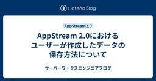
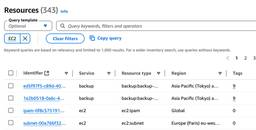
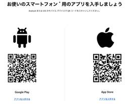
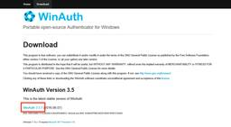
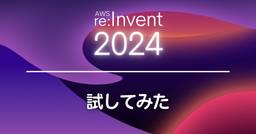
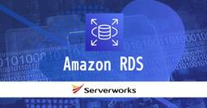
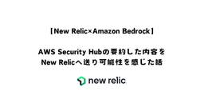

サーバーワークスエンジニアブログ
https://blog.serverworks.co.jp/
クラウド専業インテグレーター・サーバーワークスの中の人があらゆる技術についてお届けします。
フィード

AppStream 2.0におけるユーザーが作成したデータの保存方法について
サーバーワークスエンジニアブログ
Amazon AppStream 2.0のデータ保存方法を解説。ホームフォルダからクラウドストレージ、ファイルサーバーまで、多様な選択肢を紹介。
2日前

VPC Flow Logs活用ガイド：CloudWatch Logs Insightsで始めるAWSログ分析
サーバーワークスエンジニアブログ
カスタマーサクセス部の山﨑です。 AWS上で運用されるアプリケーションやリソースから出力されるログは、障害対応やセキュリティ対策、パフォーマンス分析などに欠かせない重要なデータです。しかしログの量は膨大になりがちで、必要な情報を素早く抽出・分析するためには効率的な方法が求められます。そこで活用できるのが Amazon CloudWatch Logs Insights です。 本記事では、CloudWatch Logs Insights の基本的なクエリ構文から、VPC Flow Logs を例にした具体的な分析手順まで、実践的なポイントを幅広くご紹介します。初心者の方でもわかりやすいようにクエ…
2日前

Microsoft Authenticatorを使ったMFAデバイスの登録
サーバーワークスエンジニアブログ
みなさまこんにちは！ クラウドコンサルティング課の滝澤です！ いきなりですが、MFA(2要素認証)ちゃんと適用してますか？ IDとパスワードだけでは足りていない今日この頃のセキュリティ事情です。 そこで本日は「Microsoft Authenticator」を使ったMFA仮想デバイスについて触れてみたいと思います！ 検証環境 Microsoft Authenticatorのインストール MFA仮想デバイスの追加 Microsoft Authenticatorを使ったサインイン MFA仮想デバイスの削除 AWS側の削除 Microsoft Authenticator側の削除 MFA仮想デバイスの…
2日前

WinAuthを使ったMFA（多要素認証）設定方法 - 新マネコンUI版
サーバーワークスエンジニアブログ
みなさんこんにちは！ クラウドコンサルティング課の滝澤です。 担当しているプロジェクトでMFAでWinAuthを使うことがあり、弊社のブログを見ていたのですが、 3年前の記事となっておりマネジメントコンソールのUIもアップデートされているので再度ブログを書くことにしました。 過去の記事はこちら blog.serverworks.co.jp WinAuthダウンロード MFA仮想デバイス設定 サインイン確認 MFAデバイス関連の操作許可ポリシーについて まとめ WinAuthダウンロード まず、WinAuthを公式ページからダウンロードします。 winauth.github.io 現在の最新バー…
2日前

Amazon S3 Object Lambda と Amazon Comprehend を使ってリアルタイムで PIIデータ のマスキングを実践
サーバーワークスエンジニアブログ
Amazon S3 Object Lambdaを活用し、動的データ加工のチュートリアルを実践。AWS Comprehendと連携したPIIデータのマスキング方法を学ぶ。
3日前

【AWS re:Invent 2024】GAされた「Storage Browser for Amazon S3」を試してみた 2
2
サーバーワークスエンジニアブログ
こんにちは、エンタープライズクラウド部クラウドリライアビリティ課の呉屋です。 re:Invent 2024で発表された機能で、気になっていたものがありましたので、調べつつ、試してみました。 2024年9月5日にアルファ版リリースされたS3の新たな機能「Storage Browser for S3」が、2024年12月1日に一般提供されました。 Amazon S3に保存されたデータを簡単に管理できる機能とのことです。 aws.amazon.com 試してみて分かったこと Storage Browser for S3の機能概要 実際に試してみた 環境準備 sandbox起動 環境の立ち上げ ログイ…
5日前

RDS PostgreSQL の Blue/Green Deployments で物理レプリケーションがサポートされました
サーバーワークスエンジニアブログ
こんにちは。テクニカルサポート課の森本です。 先日、RDS PostgreSQL の Blue/Green Deployments において物理レプリケーションがサポートされるアップデートがありました。 実は re:Invent 2024 前に発表されていた機能ですが、検証しようしようと思っていたらあっという間に新年を迎えてしまいました。 今回はこちらの機能について確認、検証してみました。 aws.amazon.com aws.amazon.com これまで 物理レプリケーションが使用可能な条件 物理レプリケーションの制約 動作確認 物理レプリケーション側の動作確認 論理レプリケーション側の動…
5日前
【小ネタ】Lambda から VPC 関連付けを解除した際に、ネットワークインターフェイスが残った時の対応
サーバーワークスエンジニアブログ
事象 先に結論だけ 再現調査の前提 再現調査 Lambda を編集し、 VPC との関連付けを外す 削除対象となるネットワークインターフェイスの確認 対象ネットワークインターフェイスの状態確認 バージョン 3 の削除 ネットワークインターフェイスが消えたことの確認 まとめ 関連リンク 余談 カスタマーサクセス部の山本です。😺 あけましておめでうございます。今年もよろしくお願いします。 小ネタです。 以下の事象について、調査依頼を受けまして、私の環境で再現調査をしました。 事象 Lambda から VPC との関連付けを外したものの、Lambda が使用していたネットワークインターフェイスが残っ…
6日前

【New Relic×Amazon Bedrock】AWS Security Hubの要約した内容をNew Relicへ送り可能性を感じた話
サーバーワークスエンジニアブログ
Amazon Bedrockを活用し、セキュリティイベントの要約から可視化までを実現した実践例を紹介します。
6日前

SageMaker AI での非同期推論エンドポイントの作成方法
サーバーワークスエンジニアブログ
はじめに 非同期推論とは 主な特徴 非同期推論の仕組み 非同期推論エンドポイント 前提条件 1. モデルのアップロード 2. 推論用のコンテナの作成 3. ECRへのコンテナのアップロード 4. SageMakerにモデルの作成 5. エンドポイント設定の作成 6. エンドポイントの作成 7. スケーリング設定 8. エンドポイントの呼び出し まとめ はじめに こんにちは、アプリケーションサービス部 ディベロップメントサービス１課の北出です。 今回は、SageMaker AI の非同期推論の紹介と、非同期推論エンドポイントの作成方法、非同期推論エンドポイントのオートスケーリング設定について記述…
10日前
【AWS re:Invent 2024】セッションレポート：COP304 | Monitor end user experience with Amazon CloudWatch
サーバーワークスエンジニアブログ
こんにちは。マネージドサービス部の谷内です。 本ブログでは、以下 Builders' Session についてまとめます。 COP304 | Monitor end user experience with Amazon CloudWatch By extending application performance monitoring to end users as well as frontend experiences, AWS digital experience monitoring enhances customer experiences with an outside-in p…
11日前
【AWS re:Invent 2024】宣言型ポリシー（Declarative Policies）の適用方法とSCPとの違いについて
サーバーワークスエンジニアブログ
こんにちは！エンタープライズ部クラウドコンサルティング課の山永です。 AWS re:Invent 2024において、AWS Organizationsで利用できる新しい管理ポリシー「宣言型ポリシー（Declarative Policies）」が発表されました。 本記事では実際に宣言型ポリシーを試してみて、その適用方法とSCPとの違いについて解説いたします。 宣言型ポリシーとは 宣言型ポリシーで制御可能な項目 参考記事 宣言型ポリシーの適用 宣言型ポリシーの有効化 ポリシーの作成とOUへのアタッチ ビジュアルエディタでのポリシー作成 カスタムエラーメッセージの設定 OUへのアタッチ ポリシー適用…
12日前
プライベートなEC2(Windows)に対してRDP接続する方法
サーバーワークスエンジニアブログ
はじめに 大前提 プライベート環境下のEC2(windows)へRDP接続するための主な方法 【やってみた】EC2 Instance Connect Endpointを使ったRDP接続方法 構成図 手順 Instance Connect Endpoint用セキュリティグループ設定 接続先EC2のセキュリティグループ設定 Instance Connect Endpoint作成 AWS CLIのインストール 接続してみる おわりに はじめに こんにちは。SA1課の阿部です。 2024年も残りあとわずかとなりました。 １年は本当にあっという間ですね。 突然ですが、皆さんはプライベート環境下のEC2イ…
13日前
【AWS re:Invent 2024】セッションレポート：COP340 | Supercharging security & observability with Amazon CloudWatch
サーバーワークスエンジニアブログ
こんにちは。マネージドサービス部の谷内です。 本ブログでは、以下 Workshop についてまとめます。 COP340 | Supercharging security & observability with Amazon CloudWatch In the dynamic, evolving cloud landscape effective security observability is crucial to rapidly detecting, investigating, and responding to threats. Learn how Amazon CloudWatch…
14日前
【初心者向け】ウェブパフォーマンスチューニングで役立つツールのご紹介
サーバーワークスエンジニアブログ
こんにちは。アプリケーションサービス部の渡辺です。 2024/12/8 に ISUCON14 に参加しました。ISUCON への参加は初めてです。事前勉強をしたのですが、初めて使うツールが色々ありましたのでご紹介させていただきます。 CPU の使用率を確認したい メモリの使用率を確認したい アクセスログを解析したい クエリを分析したい まとめ CPU の使用率を確認したい top コマンド を使うことでCPU の使用率を確認できます。 top コマンドの出力例 メモリの使用率を確認したい free コマンドを使うことでメモリの使用率を確認できます。 free コマンドの出力例 アクセスログを解…
16日前
【AWS re:Invent 2024】イベントを快適に過ごすための服装
サーバーワークスエンジニアブログ
気温 持って行ったもの あるとよいもの 不要なもの さいごに こんばんは、マネージドサービス部の村松です。 re:Invent のために用意した服装が完璧だったと自負しているので、自分の経験を通してレポートできたらと思います。 気温 re:Invent 開催場所はラスベガスのため砂漠気候となります。 開催期間は12月初旬。 寒いと思いがちですが、日本の10~11月くらいの気温をイメージするのがよいでしょう。昼は20℃前後、夜は6~8℃前後と、寒暖差が激しいのが特徴です。 持って行ったもの 日本から持って行ったものは以下の通りです。 長袖のトップス×2 厚手でもなく薄手でもないもの いずれもゆる…
17日前
【AWS re:Invent 2024】参加してみた感想と個人的総括
サーバーワークスエンジニアブログ
こんにちは、カスタマーサクセス部CS2課の畑野です。 re:Invent2024期間中は様々な人とコミュニケーション出来ました。 現地でメモ程度に日記を書いていたのですが、忘れないうちにこれらを振り返ってみます。 セッション 基調講演(Keynote) 会場では専用機器で同時通訳を聞くことが出来ました。 様々なサービス発表も注目の1つだったのですが、会場の熱量に圧倒されました。 GameDay re:Inventに行くなら絶対参加したいセッションでした。 現地エンジニアとチームを組んで技術的な問題を解決する、考えただけで楽しいです。 詳しくは書けないのですが、技術的なことが好きな方は是非参加さ…
17日前
Amazon Linux 2023 に導入した CloudWatch Agent で collectd を使用し、 Apache HTTP Server の統計情報を可視化してみる。
サーバーワークスエンジニアブログ
こんにちは。😺 カスタマーサクセス部の山本です。 12月25 日の記事です。メリークリスマス！😀 Qiita のアドベントカレンダー、25 日目のお題です。 背景 関連ブログ ドキュメント 前提 Apache のインストール mod_statusを有効化 collectd をインストール collectd の apache プラグインをインストール collectd の設定・起動 1 行目:LoadPlugin logfile 9 行目:LoadPlugin apache 16 行目:LoadPlugin network collectd の起動 CloudWatch Agent 側の設定変更…
18日前
【AWS re:Invent2024】 Dr.WernerのKeynoteは「見通しのいいコード」を書くためのヒントが満載でした
サーバーワークスエンジニアブログ
僕が今回re:Invent 2024に参加して一番良いと思ったセッションはAmazon CTOであるDr.WernerのKeynoteでした。 彼のKeynoteはSimplexityについて話でした。動画は公式サイトでも見ることができますし、内容はいろいろなブログでも紹介されているので、ここでは割愛します。 そのKeynoteで紹介されていたLessons In Simplexitiyは組織やアーキテクチャだけでなく、「見通しのいいコード」を文章化したものだったので、ここで紹介したいと思います。 「見通しの良いコード」とは Keynoteの Lessons In Simplexity で紹介…
18日前
【AWS re:Invent2024】AWS BuilderCardsの「Generative AI add-on」とは？
サーバーワークスエンジニアブログ
サービス開発課、濱岡です！ 今年も残りあとわずかです。あっという間ですね！ さて、このブログではAWS BuilderCardsのGenerative AI add-onについて紹介します。 AWS BuilderCardsのルールについてはこちらから↓ blog.serverworks.co.jp blog.serverworks.co.jp Generative AI add-onとは Generative AI add-onは簡単にいうとAWS BuilderCardsの拡張パックみたいなものです。 Generative AIと書かれている通り、生成系AIに関連するAWSのアーキテクチャ…
18日前
Google Calendarでみんなの予定を素早くみる
サーバーワークスエンジニアブログ
はじめに いつもレモンサワーを飲んでる、アプリケーションサービス部の森です。 今回は、Google Calendarを使われている方へのご紹介です。 いろんなプロジェクトをしていると、それぞれのメンバの予定をみたいことがあったりすると思います。 その時にその人を検索して表示してるとプロジェクトの人数次第で時間がかかったりすると思います。 そこで、「もっと簡単に選択できないのか？」ということで、ご紹介するのはこちら。 Calendar Selector for Google Calendar です。 では、設定系の話から書いていきます。 設定 chrome ウェブストア まずは、chrome ウ…
18日前
PythonでもAWS Lambda SnapStartでコールドスタートを改善することができるようになりました
サーバーワークスエンジニアブログ
こんにちは。 アプリケーションサービス部、DevOps担当の兼安です。 今回は、先日AWS Lambdaのコールドスタートを短縮するAWS Lambda SnapStartがPythonのサポートを開始したということで、これについてご紹介します。 本記事の対象者 AWS Lambda SnapStartとは AWS Lambdaのコールドスタートとウォームスタート AWS Lambdaのコールドスタートを起こしてみる AWS Lambda SnapStartを使ってコールドスタートを改善 フック：register_before_snapshotを使ってみる フック：register_after…
18日前
【New Relic】2024年の個人的な振り返り～New Relicダッシュボード作成について～
サーバーワークスエンジニアブログ
この記事では、New Relicダッシュボード作成に関する個人的な振り返りを行い、特によく使っていた『Thresholds機能』や『ダッシュボード変数』を紹介しています。ダッシュボードの管理を効率化するための工夫や、コストに関する分析例なども紹介しています。
18日前
NitroインスタンスがVM-generation IDをサポートしていた
サーバーワークスエンジニアブログ
こんにちは。 マネージドサービス部テクニカルサポート課の西尾です。 今年ももうすぐ終わり、あっという間ですね。 毎年この時期になるとブログを書いてないことに気づきます。 ちょっとした内容ですが、一つ記事にできそうでしたので以下に記します。 本記事はサーバーワークスAdvent Calendar 2024の24日目の記事です。 qiita.com Nitroインスタンスとは VM-generation IDとは 検証 構成 VM-generation IDサポート状況の確認 m4インスタンスにてリストアテスト m5インスタンスにてリストアテスト 所感 Nitroインスタンスとは AWS Nitr…
19日前
Amazon S3 Metadataって結局どんなもの？料金は？削除方法は？図解＆検証！
サーバーワークスエンジニアブログ
垣見です。 AWS re:Invent 2024で発表されたAmazon S3 Metadataについて、概要をつかめるようになることを目的としたブログです。 後半では設定・クエリ・削除も実画面で触っています。 なお、このブログはサーバーワークスで参加しているQiitaアドベントカレンダー2024の記事の一つとしてアップしておりますのでよければ他のブログもご覧ください。 ※本発表はプレビュー版です。 Keynoteで発表のあった内容と2024年12月23日(UTC+0900)時点での動作となります。 以降のプレビュー期間、および GA 時には動作が変更となっている可能性がある点にご留意くだ…
19日前
【AWS re:Invent 2024】セッションレポート：STG316 | Integrate serverless applications with AWS storage services
サーバーワークスエンジニアブログ
こんにちは。マネージドサービス部の谷内です。 本ブログでは、以下 Workshop についてまとめます。 STG316 | Integrate serverless applications with AWS storage services AWS Lambda is a serverless compute service that lets you run code without provisioning or managing servers. You can integrate it with Amazon EFS and Amazon S3 for data persistenc…
20日前
Amazon Linux 2023 のストレージ空き容量を CloudWatch Agent で監視する。
サーバーワークスエンジニアブログ
こんにちは。 カスタマーサクセス部の山本です。😺 Qiita のアドベントカレンダー、23 日目のお題は、久しぶりに EC2 の記事です。 23 日なので、Amazon Linux 2023 の記事にしてみました。 背景 CloudWatch Agent で監視できるメトリクス (参考) Windows Linux 本記事で監視対象とするメトリクス disk_used_percent CloudWatch Agent の導入 構成図 環境 いざ、導入 気づいたこと 確認 ストレージの空き容量を監視できるように修正 エージェントのログ 改めて確認 アラームの設定 通知の確認 まとめ・感想 余談 …
20日前
【AWS re:Invent 2024】セッションレポート：COP303 | Hands-on experience with Amazon CloudWatch
サーバーワークスエンジニアブログ
こんにちは。マネージドサービス部の谷内です。 2回目のre:Inventですが、今年は WorkShop と Builder's Session ばかりに参加しておりました。 本ブログでは、以下 WorkShop についてまとめます。 COP303 | Hands-on experience with Amazon CloudWatch Your enterprise’s agility, customer satisfaction, and business growth depend on setting up great observability. In order to help y…
20日前
【AWS re:Invent 2024】Creating top-tier customer support: Insights from experience | SUP309 セッションレポート
サーバーワークスエンジニアブログ
こんにちは、マネージドサービス部の中山です。 re:Invent 2024から帰ってきてしっかり風邪をひきました。 暖房をつけると乾燥がひどくなるので、ちゃんとした加湿器が欲しいです。 本記事は「Creating top-tier customer support: Insights from experience（SUP309）」のセッションレポートとなります。 こちらのセッションは以下のYouTubeでも公開されています。 youtu.be 内容 Salesforce社のサポートシステムの改善に関する内容になっていて、AWS社と協力して顧客体験を向上させるために行った取り組みについて説明さ…
21日前
【AWS re:Invent 2024】AWS re:Invent Wrap-up Sessionで何が分かるか？どんな人が行くべきか？
サーバーワークスエンジニアブログ
垣見です。 日本語で行われたAWS re:Invent Japan Wrap-up Sessionが良かったので、参加を悩んでいる方向けにご紹介します。 ※ブログ化にあたり、AWSJの方に内容や島津氏との対談の内容を出して良い許諾を得ております。 結論 対象者 AWS re:Invent Japan Wrap-up Sessionとは？ アジェンダ 詳細 キーノート振り返り Fireside chat Ask a speaker その他 特に向いていると感じた人の例 まとめ 結論 基調講演の内容や全体傾向、重要アップデートを日本語で方、 会社報告用のre:Inventまとめ資料を最速で得たい方…
23日前